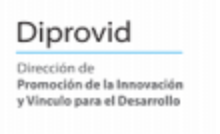

Un programa de autoformación con el modelo 70/30: 70% práctica y 30% teoría. Diagnostique su negocio, automatice procesos y cree contenido con el rigor académico de la Universidad de Costa Rica.
Empezar AhoraEste programa ha sido diseñado para adaptarse al ritmo de vida de las personas emprendedoras. Sin horarios fijos, sin dependencia de tutores, pero con una estructura pedagógica sólida avalada por la UCR.
Acceso 24/7 a todos los recursos. Usted decide cuándo y dónde aprender, gestionando su tiempo sin presiones externas.
70% Práctica: "Aprender haciendo" con ejercicios aplicables directamente
a su negocio.
30% Teoría: Fundamentación académica para entender el "por qué" de cada
herramienta.
No es solo un curso, es un modelo pedagógico diseñado para aplicar la IA en negocios reales.
Aprenda a estructurar sus peticiones a la IA con nuestro marco exclusivo: Contexto, Instrucción, Formato, Restricciones y Criterios de Éxito.
Invertimos el aprendizaje tradicional. Primero el Reto y el Hacer, después Entender la teoría y finalmente Compartir.
La IA propone, usted dispone. Enseñamos a mantener el criterio humano y la ética empresarial en el centro de cada decisión tecnológica.
La formación se divide en tres etapas incrementales, cada una compuesta por 4 semanas de trabajo bajo el modelo 70% práctico y 30% teórico.
Tres módulos diseñados para transformar su negocio paso a paso. Haga clic para ver los detalles.

Configure su ecosistema de herramientas de forma segura y realice sus primeras consultas.
Temas Clave:
Domine el arte de "hablar" con la IA para obtener resultados empresariales útiles.
Temas Clave:
Utilice la IA para radiografiar su empresa y analizar a la competencia.
Temas Clave:
Integre todo lo aprendido en un plan de acción real para su MiPYME.
Entregable: Informe de Diagnóstico y Plan de Acción IA.Conecte aplicaciones y automatice tareas sin saber programar.
Conceptos: Triggers, Acciones y Routers.
Cree asistentes virtuales para responder WhatsApp y correos.
Conceptos: Árboles de decisión y escalación a humanos.

Organice sus clientes y seguimientos de forma automática.

Proyecto final integrador: Lanzamiento de producto con IA.
Acceso directo a las herramientas y guías prácticas.